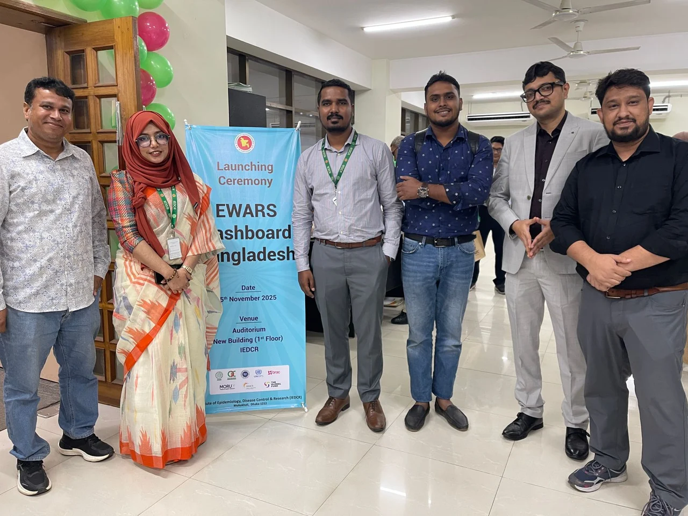
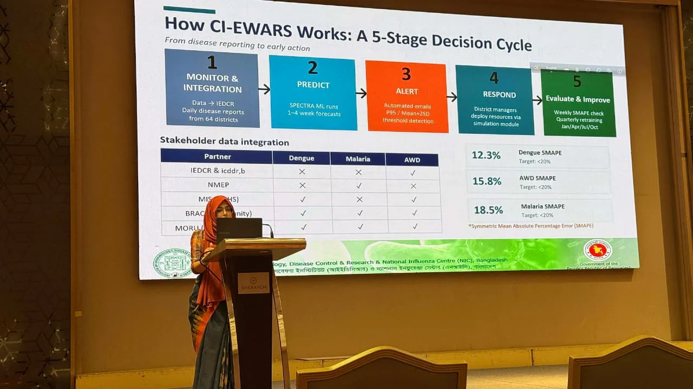
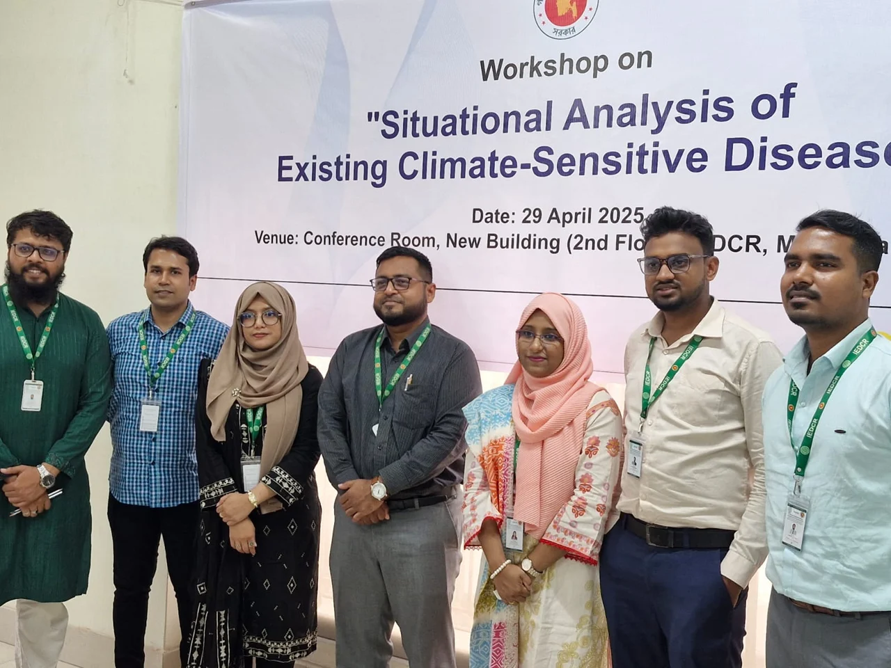
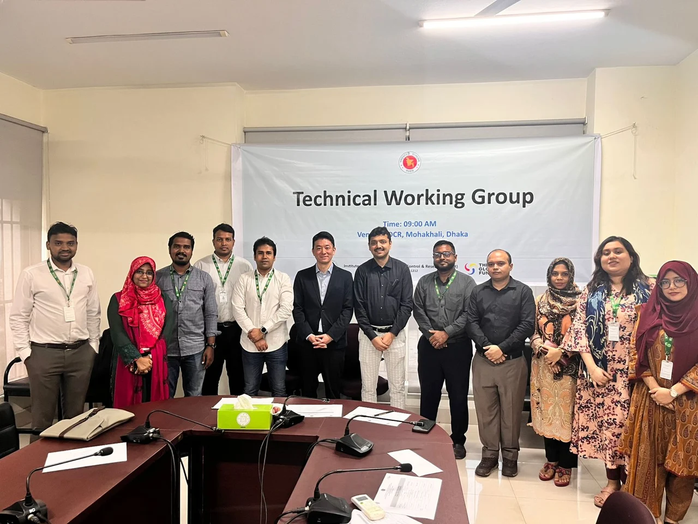

Featured project · IEDCR
Climate-Informed Early Warning System for Climate-Sensitive Diseases in Bangladesh
The GFATM Climate Change and Health Project supports Bangladesh’s first climate-sensitive disease early warning system. CI-EWS/EWARS brings together disease surveillance and meteorological information to support preparedness for dengue, malaria, and acute watery diarrhoea (AWD).
My contribution
- Prepare and validate disease and weather datasets, harmonize geographic and time identifiers, and integrate epidemiological, meteorological, geographic, and population data.
- Assess count-data and nonlinear forecasts, including negative-binomial generalized additive models, seasonal splines, autoregressive case terms, and distributed climate lags.
- Contribute to validation and interpretation of forecast accuracy, uncertainty, and usefulness for epidemic preparedness.
Model evaluation and public health use
- Contribute to evaluation of SPECTRA (GAN) and LightGBM, and investigate probabilistic forecasting, deep-learning, comparative, and ensemble approaches.
- Help translate forecast and surveillance findings into early warning information. Prepare weekly dengue reports and coordinate national updates with the Public Health Emergency Operations Centre.
- Coordinate technical teams, workshops, and demonstrations, and support data sharing with the Bangladesh Meteorological Department and other partners.
Project milestones


Workshop and working group photos

